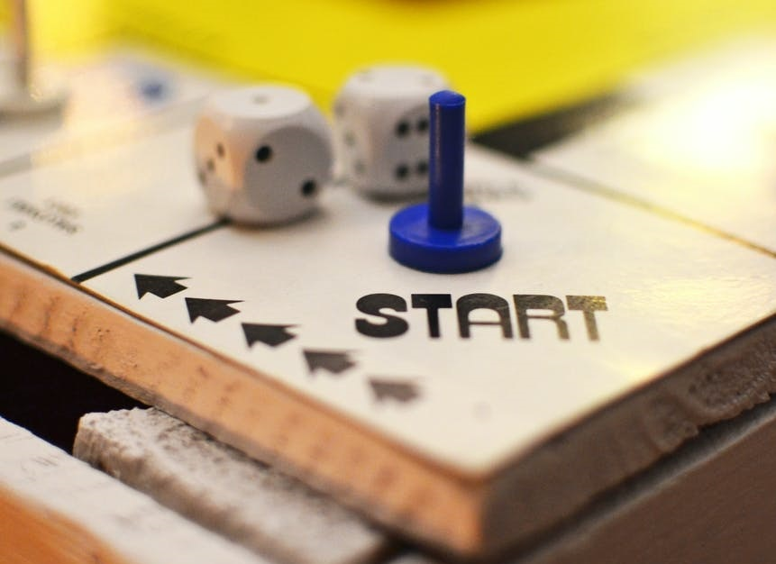

600 pushups everyday!

When I started doing pushups seriously, which is at around 2011, I could hardly do 37 straight. I remember, on my thirty-eighth attempt my arms were shaking and I could feel the sweat flowing from my forehead to the tip of my nose. I would try to push myself upwards with my shivering arms while the sweat accumulated on the tip of my nose and dropped. This was followed by me dropping flat on my chest.
As the days went by, I persisted and tried my best. These days, I can easily do at least 50 pushups without sweating a lot, on my bad day. It took a journey to get where I am now. I was constantly dedicated and passionate to get the number higher.
There are a couple of ideas to follow if you want to succeed in being able to increase the number of pushups. I want to share my opinions on the process of progressing from 38 pushups to 600 a day. I was not able to achieve physical prowess in a short period; it took me around 3 months to properly grow after I realized that my initial process was ineffective.
Following are my opinions:
- Pick A Time .i.e. Discipline: You must set aside a time of the day that works the best for you. When I say, “The Best For You”, I mean you should make sure that specific time slot is almost always free. I recommend you do your training after your office hours because usually one is happy with what one did at work and can train better. Contrary to that, sometimes you have frustrations due to work and while you are frustrated, you tend to train longer and harder. That is what happens to me at least. Most importantly, training will reduce the frustrations you developed during the work and if you are happy it makes you happier. It will seem like you are wasting precious time doing an unproductive activity, working out, but this activity will increase your productivity.
- Commit: After that you have set aside a time, you must commit to it. No excuses. As I mentioned earlier, there will be frustrations and you want to give up. In the beginning you may feel ecstatic and do not want to continue your training. In that case you can take a day off your normal schedule but try your best to not take more take 2 days off in a row.
As I am growing older I started to realize that you can use those ideas in other areas too, like education, work and maybe even relationship (this might be a little stretch but, it is possible).
You are now ready. If you pick a time of day to train and commit to it, you will see results.
Now, as for pushups, here is what I did.
My initial goal was to be able to do as many pushups in one go as possible (initial goal was 60). As I mentioned I could not do more than 37 on my first try. I persisted, I increased by 1 every day. My best increased to 47 in one week. After that, my best started to plateau. It did not increase as wildly as the first week for weeks. in the next 2 weeks, I reached 52. I remember my arms were still shaking just as hard as they were when I did the first time however I was sweating less (not sweating a lot felt good).

Reckoning that fact that I was not progressing much, I thought I might have been doing something wrong. I had noticed that my pectoral muscles were developing faster because of the training. Towards the end of every training, I would strain myself a little too hard and I could feel my abs and my lats were tightening.
Change the Plan, Never the Goal

I did not see much progress, so I changed my work out tactics. Instead of focusing on doing a lot of pushups, I tried to do it in sets. What do I mean by this? I was able to barely do around 50 pushups straight, right? Now, I changed the way I did it and started doing 4 sets of 35 pushups. I fixed the interval between sets, so that I do not exceed 120 seconds (believe me, that is plenty of time when you get used to it).
NEVER GIVE UP
In the beginning it was challenging but now I was doing 140 pushups instead of 52. It took a lot of time to complete them but once I started, I did not stop. During a set, when I felt like next repetition would be impossible to perform, I would just hold until I felt confident to do the next one. I was determined to not fall flat on my chest and I was determined to complete 35.
FRUITS OF NOT GIVING UP

As the days went by, I could easily do 4 sets of 35. It was not challenging enough. Now I increased the number of pushups per set to 40, and soon 40 was not challenging enough. Soon, I was mixing the numbers os repetitions by starting my first set with 35 pushups, continue to the second set with 45 pushups, the third set with 55 pushups and end it with the last set of 70 pushups. The time interval between the first and second set was 60 seconds, 90 seconds between the second and third set, and 120 seconds between the last 2 sets. Most of the time I would not warm up and just start a full blast, I would go all 4 sets with 60 pushups with at most 90 seconds break in between.
It is an intensive short-duration training if you follow it.
SO HOW DID I DO 600 PUSHUPS??
Soon after my pushups stamina increased dramatically, I did following:
- Start a timer.
- Immediately start pushups. Do 50 of them.
- Stop after 50 pushup.
- Rest until timer hits 5 minute.
- Start pushups when timer hits 5 minute. Complete 50 pushups.
- Rest until timer hits 10 minute.
- Start pushups when timer hits 10 minute. Complete 50 pushups.
- Continue this for an hour.
Notice that I do not stop the timer. It meant the longer I take to complete 50 pushups, the less rest I get between sets.
The more I did, the simpler it got to complete 600 pushups. Eventually, I went on to mix squats, barbell rows, biceps curl, and abs-roll-out in between the sets. You can try any of the ways to work out.